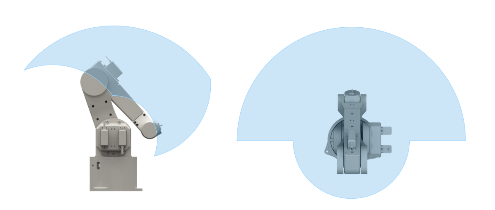
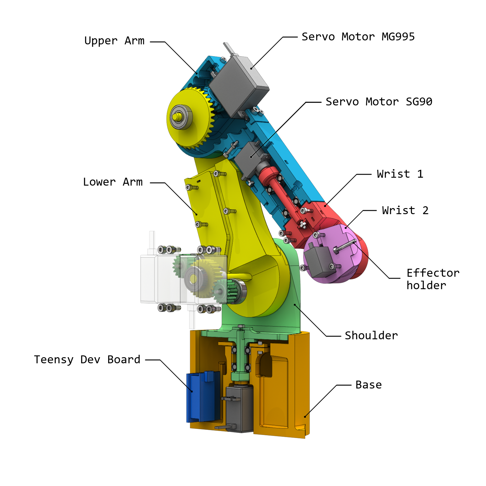

5-Axis Robotic Arm
Build & Firmware
Learning how to program a robotic arm has always been in my bucket list. But getting a decent desktop-sized robotic arm kit can be expensive, especially when you're a student. Fortunately, having a 3D-printer at hand and some skills in mechanical engineering can help making one for less than €100. And after a few weeks of design and tinkering, the coding could finally begin.
In this presentation, which will mainly focus on the firmware of the robot, I will explain how the dynamics of the system is controlled, the design choices that I have made, and much more. I will also try to (fairly) criticize my work, using what I've learned in the process to suggest improvements or point at potential drawbacks.
TL;DR
Recap 1
Recap 2
Recap 3
Overview
The robot is made of six kinematics chains and five joints, resulting in a total extended arm length of 300mm. Mobility-wise, it can pivot around 180° and cover an angular range of 110°. These features allow the arm to operate a multitude of movements and position itself in various configurations.
Six servo motors are used to generate mechanical power, complemented by two transmissions consisting of spur gears and bevel gears. The transmissions provide the robot with increased strength and payload capacity, at the expense of operative range. Furthermore, all cables are seamlessly embedded within the frame, minimizing clutter and ensuring a streamlined appearance.
Hardware-wise, the robot is controlled via a Teensy 4.0 development board, using an Arm Cortex M7. The board itself is embedded within the base of the robot.
Firmware Architecture
Some text
Key Features
Some text
Development Process
Some text
Results and Future Enhancements
Some text
Wrapping Up
Some text